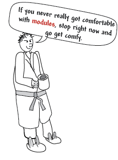

This tutorial updated May 19, 2020
1. Introduction
1.1. Expected Results
If you enter this course knowing SWI-Prolog well and have some experience with web development, you should be able to competently write production web applications afterwards. The learning curve is pleasantly short.
1.2. Time
3-6 hours if you do all the exercises. You can start writing real code after finishing section 3 at minimum.
1.3. Who This Course Is For
This course is for anyone who knows SWI-Prolog reasonably well and wants to learn the web application framework bundled with SWI-Prolog. You will also need some fluency with web development basics like HTML, CSS, and HTTP.
Many programmers assume Prolog needs to be hosted with a normal language. I’m not sure why. Certainly xpce wouldn’t be suitable for many desktop gui systems. But those are becoming rare. Even the desktop systems I’ve written recently have been written as web servers that display the UI in the browser. This course is part of my response to this mentality.
1.4. Why Prolog?
Prolog is of course more associated with expert systems and torturing undergraduates than with production web applications. But I’ve found it an excellent system for building web applications as well.
Prolog programs are simply smaller . Prolog programs are often one tenth the size of equivalent Java programs. And smallness is a virtuous cycle. Smallness encourages well written code, and well written code is easier to maintain and refactor and remains small.
What makes Prolog systems small? Complex question, but we can identify various factors. With backtracking instead of control structures, Prolog eliminates the 90% of loops that are actually iterators. Backtracking often eliminates error handling. Partial binding and incomplete structures eliminate much data reformatting. And in general, there’s just a lot more case based reasoning, which means a lot less ceremony associated with handling of edge conditions. And of course you can put a small reasoner in to figure out complex business logic like who’s allowed to edit this?
The SWI-Prolog web app framework is very friendly. You can edit running code and query make. (C-c C-m in the IDE editor) and keep going without disturbing state, and you can use the graphic debugger.
1.5. Does Anybody Actually Use This?
All these systems are in Prolog, using the web framework described in this tutorial.
1.6. Getting The Most From This Course
This course is this web page and a series of example programs.
The examples are designed to take reasonable sized bites at a subject, progressively building knowledge. I introduce some subjects in one place, then revisit them later to deepen understanding.
The example programs are not reproduced here. I want you to actually look at and fiddle with the code. So hopefully you’ll be encouraged to fiddle if you have to read the code locally. You can get the examples at https://github.com/Anniepoo/swiplwebtut
To get the most from this course, you’ll need to
-
Have a working swi-Prolog install
-
Get the example files from github
-
Understand Prolog and SWI-Prolog’s dialect before trying to build web apps
-
Read the text
-
Try each example program. Especially, look at the source of the resulting page. Experiment!
-
Do the exercises
The example programs are labelled with a number scheme that once aligned with the chapter and section number, so webserver1_2.pl was the code for chapter one section 2. They’ve long since drifted out of alignment, and I’ve just put the number in the heading.
Different people will have different backgrounds and learning styles. Whatever works for you works.
This page in the SWI-Prolog docs is useful as well
1.6.1. Getting Stuck
Many of the exercises in this tutorial were designed to push you to go explore the documentation. I feel students learn more from doing tasks like real programmers, and how do I do X is a daily experience for all of us. So don’t assume you can do all the exercises from this document! You can’t!
If you have questions and reasonable effort doesn’t answer them, drop me email at annie@theelginworks.com . Please, if you’re taking a beginning Prolog course, ask your instructor basic Prolog questions. Questions about family trees will be ignored. But if you’re working on a web app, feel free.
Asking on ##Prolog on freenode.net is also a good way to get answers.
Finally, I well could be wrong. This material’s not that well documented in spots, and I’m making these tutorials partly to teach myself. While the web app feels nice to handle, in practice I’ve had a frustrating number of wtf moments. I’m hoping this tutorial will help change that.
1.6.2. Learning By Doing
The only way to really become competent with an API is to use it. So, just as much as exercises or this page, I encourage you to make a project with the SWI tools. At the end of the course there’s a plea for people to help with a library of web patterns. If you don’t have a specific project, you might consider doing that.
If you’re the "dive in and figure it out, make a toy project" sort, you may want to peek ahead to the parameters section at some point, as the course order slogs through all of html generation first, an orderly process but one that means you’re limited what you can build til you get there.
With all that out of the way, on to the tutorial.
2. Overall Flow
To orient you, I’m going to trace through the overall flow of a request first.
A request arrives at a socket (usually port 80). http_dispatch assigns a thread from a thread pool, which parses the headers and stops reading. It decodes the path and finds a matching route. It takes all the information it has about the request and forms it into a request object, a list of options, containing such items as the headers, the requestor’s IP address, the search terms, and so on.
It then passes the request object through any installed http_request_expansion filters, which may mutate it or throw an exception.
The application programmer supplied handler predicate is then called, with Request as an additional argument.
This predicate is expected to write the page, including the headers to current_output. This will be interpreted as a CGI Document.
That this is a CGI document and not simply raw bytes for the socket is important because there are a few CGI directives, notably, one can set the status this way.
However, something higher level usually happens.
The application programmer will get any needed headers, and extract and validate the search parameters via http_parameters.
If this is a POST request, this is also when the body is normally read in.
For REST API’s, http_read_json_dict/2 neatly converts the incoming JSON to a dict term, and reply_json_dict/1 neatly gives back a dict as JSON.
For HTML, the usual way to generate a page is via reply_html_page.
The application programmer provides a DCG that defines material to be inserted in the head, and a DCG that
defines material to be inserted in the body - a sequence of atoms, like [<p>, hello out there, </p>]. I call
this tokenized HTML. I’ll describe the sequence for the body, the head’s sequence is similar.
Usually the application programmer won’t generate this material directly, but rather call the DCG html//1, passing
a Prolog term that defines HTML as a nested structure, a form I call tokenized HTML. This tokenized HTML is a much
more powerful language than "normal" HTML. You can of course insert normal HTML if convenient.
Once this tokenized HTML is emitted, it passes through a number of stages on it’s way out via print_html.
Material can be emitted at one place and placed another, the so called Mailman service. This is often used to ensure bits of script end up in the head, but has other uses.
Material is styled by passing through the user supplied expansion user:body//2 (+user:head//2 for the head).
The tokenized HTML is then formatted, inserting newlines so it’s somewhat readable (confession, definitely it’s "somewhat").
The final output from print_html is a CGI document interpreted by the system.
3. Setting Up Handlers
3.1. Hello Web
|
|
Hello Web example
See file helloweb.pl |
(Like always, I’m assuming you’re reading the code in the SWI-Prolog IDE, so I’m not showing the code here).
Web apps in SWI-Prolog can be run in various ways. The one we’ll use to start is simply running as our own web server. I’m going to cover the larger issues later, so for now I’ll give you a bit of voodoo code to get a basic server up and running
These lines include modules needed for our basic server
:- use_module(library(http/thread_httpd)).
:- use_module(library(http/http_dispatch)).And this is our main server loop.
server(Port) :-
http_server(http_dispatch, [port(Port)]).Query server(8000). to start the server on port 8000 and browse http://127.0.0.1:8000/
3.2. Handlers
SWI-Prolog web apps are defined as a collection of handlers . The first topic we’ll cover is defining handlers. If you know Ruby on Rails these are like routes.
We have a single handler that handles the root path /
:- http_handler(/, say_hi, []).This declaration says handle the root of the tree by querying the goal say_hi.
The first argument, /, is an atom that means the root of the URI. So if we instead wanted our server to serve http://127.0.0.1:8000/twinkly/elf/weenblat.xls we’d say
:- http_handler('/twinkly/elf/weenblat.xls', say_hi, []).The second argument will be called with call(Arg, Request), where Request is the request info. This enables the handy trick of making similar handlers into a single pred with specialization, like this:
:- http_handler('/something/pleasant', my_handler_code(pleasant), []).
:- http_handler('/something/painful', my_handler_code(painful(normal)), []).
:- http_handler('/something/very/painful', my_handler_code(painful(very)), []).
:- http_handler('/something/incredibly/painful',
my_handler_code(painful(incredibly)), []).
my_handler_code(WhatToSay, Request) :-
in here WhatToSay will be bound to pleasant, painful(normal),
painful(very), or painful(incredibly)
and Request is a complex term that represents the httprequest (covered later)The last argument is a set of options. The most interesting of these is prefix, which lets a single handler handle everything below the route as well. If you need to override an existing handler, you may need the priority option. priority(0) is default.
Now we’re ready for the actual handler rule.
When the rule is called the current input stream has been redirected to read the HTTPRequest, and current output has been redirected out the socket, so all we need do is print the response.
We’ll first write the required Content-type: header and then the body.
say_hi(_Request) :-
format('Content-type: text/plain~n~n'),
format('Hello World!~n').Don’t worry, this is NOT the usual way of writing content. But that’s chapter 2!
3.3. Abstract Paths
|
|
Abstract Path example
See file abstract_path.pl |
Anyone who’se made a large web app will be worried by the way we’ve been encoding our HTTP paths. /fluffybunny is fine for a small website, but imagine maintaining a large system with all these absolute paths hard coded.
|
|
If you’re used to Apache based systems you probably associate an URI path with a file path. e.g. this tutorial will be found at http://www.pathwayslms.com/swipltuts/html/index.html . But it’s served by sending the contents of a file, index.html, at /var/www/swipltuts/index.html on my server. The first is an URI path, the second a file path. They’re different! |
The solution is what SWI-Prolog calls abstract paths.
The abstract path library is at http://www.swi-prolog.org/pldoc/doc/swi/library/http/http_path.pl if you want the gory details.
In example abstract_path.pl our handler declarations have changed. They now look like
:- http_handler(root(.), say_hi, []).
% And, just for clarity, define a second handler
% this one can by reached at http://127.0.0.1:8000/taco
:- http_handler(root(taco), say_taco, []).The first is our old friend, the root handler, which serves http://127.0.0.1:8000/
Paths are offsets from an abstract base. In our case, the only abstract base is the built in one, root, which is defined as /.
So / is root(.), /taco is root(taco), and root(foo/bar) is /foo/bar (note, not root(foo(bar))).
A couple things of note. First, root(foo/bar) is OK, as is root(foo/bar).
Second, the non-atom form allows variables.
Here’s an example that handles something like http://example.com/store/34734642934621/cart.
:- http_handler(root(store/Session/cart), handle_cart(Session), []).
handle_cart(Session, Request) :-
% at this point we have the Session portion of the pathYou’re probably thinking, other than syntactic change, so what?
On to
3.4. Defining new abstract paths
|
|
New Abstract Path example
See file new_abstract_path.pl |
The example new_abstract_path.pl code adds a hook predicate that defines a new abstract path. With it, we can now say files(zap.gif) to serve /f/zap.gif. If we move the files somewhere else we can just change one line.
|
|
The path to the root of files (second arg) is an absolute path specification, not root(.) |
:- multifile http:location/3.
:- dynamic http:location/3.
http:location(files, '/f', []).Also notice that location is arity 3. It takes a list of options, the only valid option being priority(:integer)+ which is used to disambiguate multiple handlers that handle the same URI. This is useful for defining a fallback handler for prefix of / to make a custom not found page instead of 404ing, and for overriding portions of the URI space.
|
|
I was tryig to make these abstract paths be abstract files paths for a long time when learning this stuff. Beware, the two have nothing to do with each other. To make things worse, later on we’ll encounter them used together. |
3.5. Moving the whole shebang
Your server will some day probably be proxied to by apache, so your root path may be changed. You can change all abstract paths at once by redefining the setting http:prefix.
3.6. File Path Aliases
SWI-Prolog has an abstract file path system - you’ve seen it when you include modules with
:- use_module(library(http/html_write)).library is an abstract file path, also known as a path alias.
Various places in the web framework refer to files, so I’m covering this material now.
Just as hard coded URI’s become painful as a site grows larger, hard coded file paths become painful.
Developers can define additional file search paths. For example, you might have a project flubbercalc you bring into your project as a git submodule. You’d like to have those files look like part of the available libraries.
Add a clause to the multifile predicate user:file_search_path/2 for it.
user:file_search_path(library, './flubbercalc').You can also add your own paths. Say you have a file of videos you serve.
user:file_search_path(videos, './videos').Unlike URI locations, path aliases can be defined in terms of other aliases
user:file_search_path(videos, './videos').
user:file_search_path(kiddy, videos(children)).Say you have two sources of kiddy videos you purchased from different distributors, movietime and moviola. For some purposes you need them separate, but you want to be able to refer to all of them as if they’re in one directory at times.
user:file_search_path(videos, './videos').
user:file_search_path(kiddy, videos(children/movietime)).
user:file_search_path(kiddy, videos(children/moviola)).If this system is being your enemy instead of your friend, you can debug with the Prolog flag verbose_file_search. Setting it to true makes the system print out the absolute paths each time it resolves a file name. You can also directly query expand_file_search_path and see all the matches of a spec.
4. Generating HTML
So far we’ve served plain text. Lets serve HTML.
This is the longest chapter in the tutorial. I’m approaching it from the bottom up, so don’t panic until we cover html//1 if the HTML generation looks ugly.
4.1. Two Camps
There are two camps when it comes to HTML generation.

The template camp wants to edit HTML with normal HTML tools, and will live with awkward php/jsp/asp style <% …. %> escaping for dynamic generation.
The dynamic camp wants to dynamically generate web pages, and will live with an idiomatic funny looking HTML representation for the convenience of mixing code and HTML easily.
4.1.1. Options
In SWI-Prolog you have several options:
- simple-template
-
Simple-template by Raivo Laanemets (installable as a pack, or at https://github.com/rla/simple-template ) enforces the strictest separation of logic and formatting. Simple-template doesn’t allow prolog code in the template.
- Prolog Web Pages
-
PWP is the most asp/jsp like, with the advantage that it’s well formed XML. http://www.cs.otago.ac.nz/staffpriv/ok/pwp.pl
-
html//1 -
Prolog syntax DCG based HTML generation. Part of the SWI-Prolog distribution.
This chapter is about the built in SWI-Prolog HTML generation support using html//1, which is firmly in the dynamic camp. PWP and Raivo’s simple-template systems both have excellent documentation. I see no point in repeating them here.
If you pitch your tent in the template camp, SWI-Prolog provides support for it integrating PWP .
But both sides of the debate have merit. Templates are great for working with a web designer, and of course the toolchain for normal HTML is far better developed. Separating function and appearance is a good thing to do, especially if you’ll be using the code for more than one website.
On the other hand, modern web applications seem to make almost everything on the page dynamic. On the SWI-Prolog.org website, for example, even Owlie the owl icon is dynamic (he changes on holidays). If you’re generating tiny bits of HTML automatically, templates can become a nightmare.
|
|
As an aside, if you like the whole WordPress style they write most of the application for me framework, check out Raivo Laanemets' Blog-Core. |
4.1.2. Combining Options
Fortunately, this is a false dicotomy. It’s easy to integrate the systems.
That said, you can indeed output a block of normal HTML with the built-in support. Some strategies for doing so (skipping ahead a bit):
-
Use the html quasiquoter. You can write some normal HTML and say to SWI-Prolog turn this stuff into your dynamic representation.
-
Include bits of normal HTML in an otherwise dynamic page by using the inclusion mechanism described under inclusion in 2_6
-
Serve entire static pages (eg. a terms of service page) using the file serving mechanisms described in 6_1
-
Use print_html/1 to generate tokenized HTML dynamically, then insert it in simple-template using
{{- expression }}
4.2. Directly printing HTML
|
|
Direct Printing example
See file direct_print.pl |
We can serve HTML just by printing it.
say_hi(_Request) :-
format('Content-type: text/html~n~n'),
format('<html><head><title>Howdy</title></head><body><h2>A Simple Web Page</h2><p>With some text.</p></body></html>~n').Ouch!
Clearly we’re not doing this for long. But it’s nice to know you can just print if the handy helper stuff is fighting you.
4.3. Using print_html
|
|
Using print_html example
See file print_html_example.pl |
This isn’t any better, but is an important step in understanding.
|
|
Don’t do this in your own code. |
print_html is a behind the scenes predicate that converts a list of HTML chunks into a string containing HTML. Besides just concatenating, it inserts some rough formatting.
say_hi(_Request) :-
format('Content-type: text/html~n~n'),
print_html(
['<html>',
'<head>',
'<title>',
'Howdy',
'</title>',
'</head>',
'<body>',
'<h2>',
'A Simple Web Page',
'</h2>',
'<p>',
'With some text.',
'</p>',
'</body>',
'</html>']).4.4. Representing HTML
SWI-Prolog has 3 representations for HTML. It can be a single atom, like in 2_1, or a list of tokens, (tokenized html), or a term form (termerized html) that we’ll show next. Keeping track of which form you’re working with can be one of the more confusing bits. So I’m introducing some terminology that Jan doesn’t use in the SWI-Prolog documentation.
- HTML atom
-
an atom or string with HTML in it (the 2_1 representation)
- Tokenized HTML
-
The stuff above
- Termerized HTML
-
The stuff we’ll show in 2_3
4.5. html//1 And Termerized HTML
|
|
HTML DCG example
See file html_dcg_example.pl |
The primary tool for generating HTML in real applications is html//1, a DCG that takes an argument that defines some html using a domain specific language we call Termerized HTML.
Finally, we see something that looks like reasonable HTML generation.
Web pages are nested structures of boxes within boxes and areas on a page. While they have a strong structural similarity to their HTML representation, they are not identical. A search box is not, conceptually, just a text field, but is a thing unto itself.
Representing the page’s structure and converting it to a list of HTML chunks is list generation, and there’s a natural tool in Prolog for list generation - the DCG.
That’s what SWI-Prolog does, in a sorta sideways way. Here’s an example:
phrase(
html(
[head(title('Howdy')),
body([h1('A Simple Web Page'),
p('With some text')])
]),
TokenizedHtml,
[]),Notice that we’re using phrase/2. phrases first argument is a library DCG, html//1, whose argument is a DSL (domain specific language) which defines the HTML it recognizes. So, phrase/2 will unify in the above when TokenizedHtml is the tokenized HTML equivalent of the red stuff, the 'termerized HTML defined by the first arg of html//1.
It is this DSL which is our termerized HTML.
4.6. Proving it’s a real DSL
|
|
Real DCG example
See file real_dcg.pl |
Using a DCG just to call html//1 and passing it the termerized HTML probably seems, at this point, pretty Rube Goldberg-ish. When we get to inclusions you’ll see why it’s done.
Lets prove that it’s a real DCG by abstracting out the generation into it’s own nonterminal (See the file).
say_hi(_Request) :-
phrase(
my_nonterm,
TokenizedHtml,
[]),
format('Content-type: text/html~n~n'),
print_html(TokenizedHtml).
my_nonterm -->
html([html([head([title('Howdy')]),
body([h1('A Simple Web Page'),
p('With some text')])])]).4.7. reply_html_page
|
|
reply_html_page exampleSee file reply_html_page_example.pl |
Generating our own head and body tags is more ceremony than we really need. SWI-Prolog provides a nice wrapper that takes care of the boilerplate, and in the process handles a lot of other behind the scenes work. Notice it’s handled the Content-type header for us.
say_hi(_Request) :-
reply_html_page(
[title('Howdy')],
[h1('A Simple Web Page'),
p('With some text')]).We’re down to a single API call that takes some termerized HTML to include in the head and the contents of the body, which is pretty close to zero ceremony.
(If you’re paniced and thinking oh, man, I don’t control the head?, relax - you do, we’ll get there when we cover the arity 3 version reply_html_page/3 in a bit.)
4.8. Termerized HTML Syntax
|
|
termerized_html exampleSee file termerized_example.pl |
Now we’re ready to look at the termerized HTML syntax. You’ll definitely want to have termerized_example.pl open in front of you as you read this.
The SWI-Prolog docs for this are in this location (which I recommend bookmarking, as finding it is always exciting).
Termerized HTML uses an arity 1 or 2 term for each HTML tag.
The arg of arity 1 terms is the innerHTML. The args of arity 2 terms are attributes and innerHTML. Either one can be a list to allow multiple items.
say_hi(_Request) :-
reply_html_page(
[title('Howdy')],
[
h1('A Simple Web Page'), % arity 1
p(class=bodytext, 'With some text'), % arity 2
p([class=bodytext, style='font-size: 120%'], ['Bigger text', b('some bold')])
]).The html//1 term takes a term or a list as it’s sole argument, in the same format at the innerHTML argument of tag term
4.8.1. Here’s most of the forms you can apply:
|
|
One form you won’t see is a nested list. [p(a para), [p(in a nested list)]] is not valid termerized HTML. You’ve been warned. |
4.8.2. Inner HTML
A simple headline with plain text inside it
h1('A Simple Web Page'),A bold paragraph
p(b('some bold text'))If it’s a list, the items are converted individually and concatenated.
A div block with two paragraphs
div([p('a para'), p('another para')])4.8.3. Entities
entity escaping happens
p('<b>this wont be bold</b>')appears literally, not in bold.
If you need an entity you can name one
&(copy)gives a copyright symbol
p(['Copyright ', &(copy), ' 2012, Anne Ogborn'])4.8.4. String Help
There’s much help to perform string operations. You can get format/2 style formatting using -
p('these ~d things, faith, hope, and love. But the greatest of them is ~w'-[3,love])Concatenation usually isn’t needed, but is
p('two strings'+'two strings')would usually be expressed
p(['two strings', 'two strings')Though the first doesn’t leave a space between them
4.8.5. Attributes
This paragraph has a style and tooltip text.
p([style='font-size: 36pt', title='tooltip text'], 'With some text'),If there’s a single attribute the list can be omitted
p(class=foo, 'some text')Notice that SWI-Prolog will put the quotes around foo in the HTML. As always in Prolog you have to quote atoms with iffy chars in them, like the src and alt attributes below.
img([src='obama.png', class=pres, height=128, width=128, alt='Barack Hussain Obama'], [])Attributes have an even more extensive set of helper operators.
Attributes can be specified by K=V pairs like class=foo or by K(V) terms like class(foo). The latter form is useful for avoiding operator priority worries
Concatenate like this:
class=alert+AlertLevelFormat strings like format/2 go like this:
alt='Image of ~w'-[Subject]+List produces a query string with proper urlencoding
href='mep.php?'+[name=Name, email=Email, sex=Sex]This urlencodes an arbitrary atom or string
href='http://example.com/foo.php?msg='+encode(MyMessage)Later we’ll cover another way of specifying a handler, by ID. This syntax creates a URL from a location ID.
href=location_by_id(ID) % treated laterA list not interpretable as right side of operator is joined with spaces. This is useful for multiple class lists.
class=[emphasize, left, question]becomes
class="emphasize left question"This bit about namespaces is slightly esoteric, feel free to skip down to the next exercises if not of interest.
Attributes in other namespaces look like this. This is fairly rare in html, it shows up when mixing in XML or RDF related stuff. Here we have elgin:advisory. Note that, surprisingly, HTML5 doesn’t "know" about namespaces, and adding them to the html tag is invalid. Colon is a normal character in attributes in HTML5.
html(div([class(Classes), elgin:advisory(ToolSet)],
[img([class('el-tool-image'), elgin:advisory(ToolSet), alt(Alt), title(Alt), src(Image)]),
\subtools(ToolSet)]
)).If you’re in XHTML dialect you can add namespaces with xhtml_ns//2. By default SWI-Prolog puts out HTML5. To put out XHTML do
html_set_options([dialect(xhtml)])This section’s certainly long, but it’s the core of the tutorial. Still, lets break and do a few exercises to absorb what we’ve learned.
5. Inclusion
|
|
termerized_html exampleThis section also uses file termerized_example.pl |
HTML is a markup language. It’s tags are not the semantic units of a web page as we think about it. We want to talk about the login box, not a div with a text box blah blah. Inclusion is SWI-Prolog’s mechanism for encapsulating HTML generation code. This means you can create structured, reusable components of web pages, and pays off many times the slight awkwardness of funny looking html.
Inclusion is signaled by \. If the argument of \ is a term, it will be treated as a DCG, and expanded to tokenized HTML.
The line
\some_included_stuff,Calls the DCG
some_included_stuff -->
html([p('Some included stuff')]).Of course you can pass semantic arguments
\more_included_stuff('Whoop Whoop!'),…which calls…
more_included_stuff(X) -->
html([p(['More included stuff: ', b(X)])]).Notice you’re back in tokenized HTML space (and in Prolog). You need html//1 here.
You only need html//1 when it’s time to make literal HTML. Nothing wrong with
included_stuff(X) -->
another_inclusion(X),
and_a_third_inclusion(X).Included lists are treated as literal, tokenized HTML to be included. So, you can include a block of HTML set up with a normal editor
\['<i>in italic</i>', '<b>now we have bold</b>'],|
|
If you do this you can’t depend on html//1 always producing valid HTML. For this reason, seriously consider using quasiquotes instead. Quasiquotes largely deprecate this mechanism. |
|
|
The list brackets for including a literal are not optional! \[term] and \term are completely different. The first puts <i>term</i> in the html. The second treats term as an inclusion. |
A useful way of thinking about inclusion is that \ is an escape that says, in effect enter tokenized HTML world. \
Inclusion is simultaneously one of the neatest features of SWI-Prolog web, and one of the greatest sources of frustrating bugs.
The secrets to avoid driving yourself insane with inclusion are, first, understand whether you’re in termerized HTML or tokenized HTML space. Second, be aware you aren’t in prolog, and need to follow the DSL’s, not Prolog’s, module rules.
5.1. Quasiquotes
|
|
Quasiquotes example
This section uses file quasiquotes_example.pl |
At this point those of you in the template camp are probably running in circles, screaming and shouting, thinking that the only escape from Jan’s strange formatting for html is to abandon ship and use simple-template, or ignore the warnings liberally plastered about the \[ ] format.
Have no fear, quasiquotes are here.
Quasiquotes are an extension to the Prolog syntax that says, effectively "and now for a little of this other language, which I’ll syntax check and convert at compile time to a Prolog term".
Here’s demo of the html quasiquoter in use. We import html_write to get the appropriate quasiquoter (html in this case) and then use {|html(Y)||<p>Y</p>|}, the curly brackets and or bars defining "this is a quasiquoter, here’s the args and body". html(Y) defines the args to be passed in (notice that it’s not like function argument passing, the name can’t be changed like with a formal arg on a function), and inside is the body, which is syntax checked, and Y is replaced.
2 ?- use_module(library(http/html_write)).
true.
3 ?- Y=7,X = {|html(Y)||<p>Y</p>|}.
Y = 7,
X = [element(p, [], [7])].
4 ?-Just the thing for us. Now we have syntax checking, editor coloring, and aren’t in the wild west of converting between html and strings.
Here’s what it looks like inside of a DCG inclusion:
my_headline(X) -->
html({|html(X)||<h1>X</h1>|}).Notice we’ve passed it to html//1. That’s usually what you’ll do with it.
But what’s it compile into? The SWI-Prolog docs say
html/4 Quasiquote output formatThese quotations produce a DOM term that is suitable for html//1 and other predicates that are declared to consume this format.
?- use_module(library(http/html_write)).
true.
4 ?- X = hello,Y = {|html(X)||<h1>X</h1>|}.
X = hello,
Y = [element(h1, [], [hello])].
5 ?- Y = {|html(X)||<h1>X</h1>|}.
Y = [element(h1, [], [X])].The funny list with element/3 term in it is the format SWI-Prolog represents SGML in. But usually you won’t care about that.
If you want to insert some normal HTML boilerplate in the midst of a mass of termerized html, do it like this:
my_inclusion(X) -->
html([
p('termerized para'),
\html({|html(X)||<p>X</p>|})
]).Admittedly slightly verbose.
5.2. Inclusion And Modules
|
|
Inclusion and Modules Example
This section also uses file termerized_example.pl and anothermodule.pl |

Now that you can make nifty bits of pages, you start accumulating them and soon you have enough you need to organize into modules. You use the usual use_module system and life is good for a while.
Then you get this bright idea. You could make your site look really awesome by using Javascript and HTML5 to draw a hand drawn border around the various sections. But now we want to add the hand drawn look without having a mess everywhere. We could do:
start_hand_drawn_box, ... contents, \end_hand_drawn_boxbut that’s ugly - it doesn’t express the containment structure.
So we write an inclusion DCG that takes some termerized html as an argument and adds the html around it to make the hand drawn look.
hand_drawn_box(InnerHTML) -->
html([.... whole bunch of crazy javascript stuff...,
div(class=hand, InnerHTML),
... more totally unreadable javascript ... ]).We try this, and, after debugging the ugly javascript, it works. Cool! So, being organized, we move it into it’s own module. And suddenly it fails when we try this:
%in module1
email_me_form -->
html([div(class=emailme, form(.... mass of form code ...))]).
my_contents -->
html([... stuff...,
\hand_drawn_box([... stuff..., \email_me_form, ...]),
... endless stuff ...]).
%in module2
hand_drawn_box(InnerHTML) -->
html([.... whole bunch of crazy javascript stuff...,
div(class=hand, InnerHTML),
... more totally unreadable javascript ... ]).And it complains it doesn’t know about module2:email_me_form//0 - Ooops! hand_drawn_box is binding it’s arguments at the wrong time!
The same thing can happen in normal Prolog code. The fix there is the meta_predicate/1 declaration, which marks which arguments are module sensitive. Module sensitive arguments have their module resolved before the call. Unfortunately, we’re not in Prolog, we’re in termerized HTML DSL language.
Fortunately there’s an extension to meta_predicate that handles html. html_meta works like meta_predicate, but allows html as well as the usual :, ?, +, -, etc. At compile time, the termerized HTML gets module extended in the context of the caller, and Bob’s yer uncle.
Now we can make an inclusion that takes html:
%in module2
:- html_meta hand_drawn_box(html,?,?).
hand_drawn_box(InnerHTML) -->
html([.... whole bunch of crazy javascript stuff...,
div(class=hand, InnerHTML),
... more totally unreadable javascript ... ]).hand_drawn_box takes termerized HTML as it’s first argument. Remember that it’s a DCG, so there are two additional arguments for the difference list, hance the two ? arguments.
Besides fixing the module issue, the pceEmacs editor will now properly syntax color the argument.
This works great as long as you’re passing termerized html around. Imagine things are even worse - say you’re passing a list containing various html hunks to an inclusion, and it’s supposed to include one based on some other criteria. We can’t use html_meta/1.
The solution is to explicitly specify the module of the inclusions. Remember, you’re not in Prolog, but in the DSL, so you have to use the DSL’s module rules. So you’ll need to do this for inclusions from the calling module, not just from other modules.
\(othermodule:inclusion(X))Operator precedence makes the parens necessary.
I would say, module issues are, along with inclusion, the great pain points in using the web framework. Don’t go past this point without understanding the module system, meta_predicate, meta_html, and how inclusion works.
5.2.1. Start A Project
At this point our exercises start building on each other. You may want to copy one of the examples to create a starting point.
6. Styling
|
|
Styling example
This section uses file styling_example.pl |
Until now our web pages have looked pretty last century. To boot, we get no help adding the common elements across all pages. Lets spiff things up.
Corporate wants every page to say The Simple Web Page Site across the top of every page. It’s a common requirement. Why should we repeat that for each page?
reply_html_page has an arity 2 and an arity 3 form. The arity 3 version saves us
say_hi(Request) :-
reply_html_page(
tut_style, % define the style of the page
[title('Howdy')],
[\page_content(Request)]).this declares to SWI-Prolog’s innerds that it should apply tut_style to this page.
To define tut_style, we need to define a hook
:- multifile
user:body//2.
% Body will be included
user:body(tut_style, Body) -->
html(body([ div(id(top), h1('The Simple Web Page Site')),
div(id(content), Body)
])).Observation here - what’s coming in is tokenized HTML.
6.1. user:head
You can do the same thing with the head. Add a hook predicate for user:head. This is a possible, but rarely the best, method of including Javascript and CSS. More often, it’s a great way to get things like the title and keywords set up.
Of course you can have more than one style. At my employer we use one style for content to be viewed on the web and one style for content to be viewed in the virtual world.
6.2. Mailman
|
|
Mailman Example
This section uses file mailman_example.pl |
Mailman is a facility for creating HTML that ultimately ends up somewhere besides where you generated it. It has nothing to do with email.
We’re covering it with styling because it’s often used to place content in the head, but it has a lot of other uses.
Often it’s a lot easier to generate a page in an order other than the final lexical order of the html.
Suppose we have a page with a top navigation area that gets dynamicly generated. Being organized, we abstract the nav bar into an inclusion DCG.
Early version - not like the example file
page_content(_Request) -->
html(
[
h1('Demonstrating Mailman'),
div(\nav_bar),
p('The body goes here')
]).
nav_bar -->
{
findall(Name, nav(Name, _), ButtonNames),
maplist(as_top_nav, ButtonNames, TopButtons)
},
html(TopButtons).The web designer notices that many of our pages get long, and wants to add a small type version of the navigation at the bottom.

We already have the list of buttons when we make the top menu. Can we avoid duplicating the work of making the list for the bottom?
Mailman allows us to generate tokenized HTML in one place and mail it to another place, the mailbox, in the page.
File mailman_example.pl sends the bottom buttons to the bottom with
\html_post(bottom_nav, BottomButtons)and receives them with
div(\html_receive(bottom_nav))
page_content(_Request) -->
html([
h1('Demonstrating Mailman'),
div(\nav_bar),
p('The body goes here'),
div(\html_receive(bottom_nav))
]).
nav_bar -->
{
% we only need to find the ButtonNames once
findall(Name, nav(Name, _), ButtonNames),
maplist(as_top_nav, ButtonNames, TopButtons),
maplist(as_bottom_nav, ButtonNames, BottomButtons)
},
html([\html_post(bottom_nav, BottomButtons) | TopButtons]).A common reason to do this is a page element that in turn requires something in the head, say a widget that depends on a dynamic css or js snippet or dynamic keyword generation. In fact, the mailbox name head is always defined.
Another common reason is an element (say a list of blog posts) whose contents are accumulated during page generation, and a set of links to them near the top of the page.
Be aware, it’s possible to baffle it when mailing inclusions deep in other structures. You may need to use the \(module:name(args)) form for any inclusions you mail. (if all you’re mailing is the inclusion, the system handles that).
7. Handling Parameters
By now you’re probably itching to make something real. With parameters, we can start getting dynamic.
7.1. http_parameters
|
|
Parameter example
This section uses file parameter_example.pl |
This section is about the pred http_parameters, documented at this page.
The documentation is actually quite good, so I’m going to refer you there for parameter handling, but tell you about some gotchas.
Gotcha #1: If a parameter is missing or invalid it doesn’t fail, it throws an exception.
This means you need a catch block around your code. In my own code I’ve written a http_parameters_quietly that wraps the exception and fails.
Gotcha #2: POST requests where the body has query string syntax aren’t available without the form_data option.
7.2. Handling POST requests
|
|
Parameter example
This section uses file post_example.pl |
POST is often used to send large chunks of data not in search string format. Example post_example demonstrates directly reading the data POSTed by a web form.
Contrary to the statement at the top of the SWI-Prolog page, POST requests are not transparently handled. If you’re handling a POST request you’ll need to add the form_data option to the http_parameters/3 form. Additionally, the code apparently reads the POST data once, and can’t backtrack.
7.3. Advanced Parameter Tricks
A semi-useful tool for websites that shove many of the same parameters around is the attribute_declarations option of +http_parameters/3. This allows you to define how to validate various parameters in one place.
reply(Request) :-
http_parameters(Request,
[ title(Title),
name(Name),
age(Age)
],
[ attribute_declarations(param)
]),
...
param(title, [optional(true)]).
param(name, [length >= 2 ]).
param(age, [integer]).Another useful gem is http:request_expansion. This lets you decorate the request. For example, if you want some common data from a database attached to most requests, you could just have request_expansion decorate it.
Skipping ahead a bit, the session data is in the request structure and covers most uses of request_expansion.
Finally, you’ll soon tire of passing Request around. You can get the current Request object with http_current_request.
7.4. File Upload
|
|
File Upload example
This section uses file file_upload_example.pl |
This example is taken in it’s entirety from The SWI-Prolog docs for uploading files
The documentation’s pretty clear.
Since this is all Jan’s code, not mine, you’ll need to query run. and then browse localhost:8080
Multipart MIME uploads involve all sorts of insanity. I refer you to
The mail list discussion for the gory details.
8. Sessions
An explanation, if you don’t know what sessions are.
The basic design of the web is stateless. Every transaction is independent of every other transaction. But we want to have an ongoign conversation with the user - when they put something in their shopping cart, we want to remember it.
Enter sessions. We give the browser a unique number (usually as a cookie) that they give back to us. We then look up the data associated with that session number, and we have the user’s data. Of course eventually memory would fill with sessions, so we delete old sessions. If we don’t have the data for a session ID, we just start a new one. You can see this by going to a site, putting something in a shopping cart, then not coming back to the site for months.
Now, on to handling sessions in SWI-Prolog.
8.1. Basic Session Usage
|
|
Session example
This section uses file session_example.pl |
At this point you’re probably fantasizing about all the stuff you can make in SWI-Prolog web, but you know you’re going to have to track sessions.
Sessions are ubiquitous on the web. I assume some of you understand sessions, but for those who don’t -
When a user visits a web page, they’re handed a cookie, a code they’re supposed to hand back to the server with the next page request. So you visit the fluffy bunnies site, and you’re given 3472723
You ask for another page, and your browser sends along cookie 3472723. The server knows you’re user 3472723 and can customize the page for you.
The classic example of this is shopping carts. You click a link to put a beany baby in your shopping cart, and the server now has a data structure 3472723 has a beany baby in their shopping cart, and when it generates the page it puts 1 over the shopping cart icon.
Eventually, of course, the server gets rid of the session. Usually after 30 minutes or so without hearing from the user.
The example provided with the tutorial gives the user a silly name. Once the name’s established, it will be used on subsequent visits as long as the session lasts. Most systems keep sessions about 30 minutes after the last activity (its settable in swi-prolog).
Whats going on under the covers is that the first httpRequest includes in its' response a set-cookie header with a random number. Subsequent requests pass this cookie back to the server, so the user gets a persistent identity. Now data can be associated with that identity using http_session_asserta and http_session_data
Implementing session control is insanely simple. More fun than Python
:- use_module(library(http/http_session)).Wait, no, cmon, it can’t be that simple!
Yup. It is. You got sessions.
You know that lovable school/military/fascist youth camp tradition of giving people horrible nicknames? Ones they could never change? You didn’t find it lovable? Me neither.
Lets build a site that gives people more affirming nicknames. Of course, once we pick their nickname, they’re stuck with it as long as their session lasts. Right, Oh Blessed One?
Each request has a current session. That session has it’s own knowledge base that can be controlled with http_session_assert, http_session_retractall, and the obvious analogous calls, and queried with http_session_data/1. It’s elegant and easy.
So, for our example, we’ll check to see if we’ve given this person a nick. If we find one in their session data, great.
nick_name(Nick) :-
http_session_data(nick_name(Nick)),!.If not, we’ll make one and assert into the session data
nick_name(Nick) :-
nick_list(NickList),
random_member(Nick, NickList),
http_session_assert(nick_name(Nick)).
nick_list([
'Gentle One',
'Blessed Spirit',
'Wise Soul',
'Wise One',
'Beloved Friend'
]).We won’t cover it in this course, but you can control who gets a session. If you set the http_set_session_options create option to noauto you can manually create sessions. If you want you can set the session lifetime. This can dramatically affect server memory if have a typical distribution of visitors, with many arriving at a single page and a few staying.
You can also restrict which parts of your site cause a session to be created. This can be very useful for, say, an informational site that doesn’t need sessions for most visitors, but includes a small online store selling cafe press mugs and so on and needs sessions for the shopping cart.
9. Handler ID’s
|
|
Handler ID example
This section uses file handler_id_example.pl |
The other half of abstract paths is ways to refer to handlers that don’t break even if we move their location around. Handler ID’s are that solution.
I think of this joke when I think of handler id’s in SWI-Prolog.

We can represent a handler in many different ways:
http://27.0.0.1:8080/f/bar
/f/bar
files(bar)
root('f/bar')
the f_bar_handler predicateBut ultimately none of these names this handler. All but the first name a path, concretely or abstractly. And that’s something that can move around.
The last names the handling predicate. Often that’s unique to a handler, but not always, as we’ve seen. So you can provide an option id(login_page) to the http_handler option list to name the handler itself. Once it has a name you can refer to it in various places, the most useful of which is for making links that don’t break when you move things around:
a(href=location_by_id(login_page), 'Log in')Now, that’s great if whoever wrote the login_page handler gave it an ID. But if not, can you do the next best thing, and refer to the rule that handles it? Yup.
a(href=location_by_id(login_page_handler), 'Log in')Of course it’s probably in some other module. We can handle that (it’s not obvious we can, we’re in termerized HTML, not Prolog, remember)
a(href=location_by_id(login_module:login_page_handler), 'Log in')If it’s got args, you’ll need to omit those (so it’s less useful for our exercise)
And, a couple tools that occasionally are handy:
Get a URI for an ID
http_location_by_id(+ID, -Location)And
http_link_to_id(+HandleID, +Parameters, -HREF)And now for an exercise:
10. Special Handlers
10.1. Serving Files
|
|
Static Files example
This section uses file static_files_example.pl |

I hope by this point you’re getting excited about SWI-Prolog web!.
Maybe you’re so excited you want to serve up the SWI-Prolog owl!
No?
Well, you probably do have assets like this you want to serve up.
Fortunately, there’s a canned handler that will serve files in a directory tree.
:- http_handler(files(.), http_reply_from_files('assets', []), [prefix]).This line deserves some scrutiny.
First, note that we’re finally seeing why I’ve been dragging around this files(.) location. Our path is the root of files, which maps to uri /f
Second, we’re using a path alias to describe the file’s location. In this case we’re just using assets, which is a subdirectory of the current one.
Lastly, note the prefix. So everything under the assets directory will be served. Wow, just like we’re Apache or something! Maybe not. Can’t make a living maintaining SWI-Prolog config files.
Run the server and browse http://127.0.0.1:8080/f/swipl.png
{kind=link}
Congrats! The owl appears.
|
|
serve_files_from_directory/2 is an older, less capable version. New code should use http_reply_from_files/2. |
One bit of security here. You don’t want to serve something outside the served space, so need to prevent J Random Hacker from asking for http://mysite.com/f/../../../etc/passwd or some such. So, it’s wise to use http_safe_file/2 to sanitize file names. http_reply_file does the sanitizing for you.
With finding files in various places and whatnot, interestingly, the SWI-Prolog website’s code to serve static assets is a good page long, much of it involved in displaying txt files by converting to html.
Hey, what happens if you ask for the directory? There’s a kumquat in there!
Gives a directory listing just like a real web server, even if it is in a language that’s only used for AI (wink wink).
And, for the record, you can make an index.html page just like normal. Browse http://127.0.0.1:8080/f/
The SWI-Prolog libraries define a few static file handlers - css, js, and icon are all defined already. You probably want to have those same handlers. Easy! Just add your directory to the file alias the library handler is already handling. If your css files are in ./files/css under your project directory, you can just do:
user:file_search_path(css, 'files/css').Don’t do this:
user:file_search_path(css, root('files/css')).because root’s a URI path alias, not a file alias
So, what happens if we ask for something that’s not there? Try http://127.0.0.1:8080/f/robot.png
{kind=link}
Hmm… that’s not so good. Nasty error message.
Hey, speaking of error messages, that default error page isn’t going to fly in production.
10.2. Custom Error Pages
|
|
Custom Error Page example
This section uses file custom_status_page.pl |
When we ask for a nonexistant page, or when the handler fails or throws an exception, the framework displays a default status page.
We can customize the status page by defining a hook predicate.
:- use_module(library(http/http_header)).
:- multifile http:status_page/3.
http:status_page(not_found(URL), _Context, HTML) :-
phrase(page([ title('Sorry, no such page')
],
{|html(URL)||
<h1>Sorry, no such page</h1>
<p>I'm afraid you asked for a page we do not have. Please try the
search box to locate the page you are looking for.
|}),
HTML).The first argument to http:status_page/3 will be one of these statuses, which map to the text version of the various HTTP statuses.
For example, to override 500 status errors, unify the first term with server_error(_).
% - authorise(Method)
% Challenge authorization. Method is one of
% - basic(Realm)
% - digest(Digest)
% - authorise(basic,Realm)
% Same as authorise(basic(Realm)). Deprecated.
% - bad_request(ErrorTerm)
% - `busy`
% - created(Location)
% - forbidden(Url)
% - moved(To)
% - moved_temporary(To)
% - `no_content`
% - not_acceptable(WhyHtml)
% - not_found(Path)
% - method_not_allowed(Method, Path)
% - `not_modified`
% - resource_error(ErrorTerm)
% - see_other(To)
% - switching_protocols(Goal,Options)
% - server_error(ErrorTerm)
% - unavailable(WhyHtml)So now we have nice professional looking error pages.
Now, what if you need to generate the page? For example, if you discover that someone is trying a forbidden operation deep in the code, you can
throw(http_reply(Term))Where Term is one of the above.
Alternatively, you can generate one of these pages yourself, using http_status_reply/4 to generate the page. Notice that you need to do this at the handler level.
10.3. Redirect
You’re probably wondering what happened to redirects. If you’re used to the old not signedin, redirect paradigm, you need it. But, actually, instead of a redirect, consider calling the handler of the page you’re redirecting to.
If you need a real redirect, use http_redirect/3
11. Including Resources
Well, we can serve files, now lets get them included in our web pages.
11.1. Using mailman to include CSS
|
|
Don’t actually do this in real code. See next section. |
|
|
Resource by Mailman example
This section uses file resource_by_mailman.pl |
One way to include resources is to use mailman to mail them into the head.
We’ll receive the stylesheet link in the head. No need for fancy, we’ll just put it in the material included in the head by reply_html_page
a_handler(_Request) :-
reply_html_page(
[title('a page with style'),
\html_receive(css)],
[h1('A Page That Glitters'),
\css('/f/specialstyle.css'),
p('This para is green')]).Now we need to make sure the css link gets sent. How about making an inclusion that does this for an arbitrary URL. Then we can include whatever bit of special CSS without much code.
css(URL) -->
html_post(css,
link([ type('text/css'),
rel('stylesheet'),
href(URL)
])).There is an implied html_receive(head) in reply_html_page. This is very useful for sending random things to the head.
A common situation is dealing with ugly hacks to get around IE borkedness. Here’s a mess I needed for a Leaflet map:
<!--[if lte IE 8]>
<link rel="stylesheet" href="http://cdn.leafletjs.com/leaflet-0.5/leaflet.ie.css">
<![endif]-->The way to handle this is to use \[…] and mailman
:-html_meta if_ie(+,html,?,?).
if_ie(Cond, HTML) -->
html(\['<!--[if ', Cond, ']>' ]),
html(HTML),
html(\['<![endif]-->' ]).
... then when I want to insert conditional material ...
html([
\html_requires(leaflet),
\html_post(head,
\if_ie('lte IE 8',
link([ rel(stylesheet),
href('http://cdn.leafletjs.com/leaflet-0.5/leaflet.ie.css')
]))),
div([ id(ID)
],
[])]),11.2. Including Resources With html_resource
|
|
Proper Resource Example
This section uses file resource_example.pl |
This material is described in the SWI-Prolog doc for resources
Looking at the previous method of including resources, a few defects of the method come to mind
-
There is nothing preventing the resource from being included twice
-
It’s a bit of unneeded ceremony
-
If a resource needs another resource you have to remember that yourself
SWI-Prolog to the rescue. Using the resource manager, you describe resources, and then include them with html_requires//1.
How you include a resource of course depends on it’s type, because it has to know how to write the tag to include it (eg for css it’s to make a stylesheet link). So the default only understands javascript and css, but you can add your own types.
So, our page requires some special bit of css in specialstyle.css, which depends on the corporate standard gradstyle.css. So lets enforce including gradstyle.css any time we include specialstyle.css.
:- html_resource(files('specialstyle.css'), [requires(files('gradstyle.css'))]).The first arg is a standard path, as an URI or abstract path. The second is a properties list. The most useful is requires, which takes another resource path, one of a resource name, an abstract path or an URI. If there is more than one required resource, pass them as a list. Use the ordered(true) option to enforce their being loaded in the list order.
There are a few other very useful options.
-
virtual(true)lets you set up, for example, bootstrap as a single resource, bootstrap, and get the js, the css, and anything else it needs, or decouple bootstrap from a version number -
ordered(true)makes sure the resources get loaded in the right order. -
aggregate/1is supposed to be for situations where you might need only a small part of a large file. If you have a big css file with sections A, B, C, and D, and four smaller files A,B,C, and D, and you load the big one in one place, you don’t need the smaller ones. The a number of algorithm is pretty dumb. It’s greater than 4. -
mime_type/1lets you specify the type of a resource, so if your javascript file is named bunny.poo for some strange reason, you can still load it as javascript. I believe the documentation is wrong, it’s + mode.
On larger projects I usuallay set up a virtual resource for each item, that in turn requires the real file. This way, if I change versions of jQuery I only have to change it in one place.
The other bit of magic we need is to declare that we need the resource. Since the declaration’s a DCG we can just stick it in the termerized HTML.
a_handler(_Request) :-
reply_html_page(
[title('a page with style')],
[h1('A Page That Glitters'),
\html_requires(files('specialstyle.css')),
p('This para is green')]).reply_html_page handles everything under the covers.
A useful tool for debugging resource dependencies is to turn on debug(html(script))
and monitor in the debug message window.
11.2.1. Adding mime type handlers
File extensions are a (not very good, but universal) way to indicate content type. To get the actual mime type we can use file_mime_type/2
2 ?- file_mime_type('foo.js', X).
Correct to: "mimetype:file_mime_type('foo.js',X)"? yes
X = text/javascript.
3 ?- file_mime_type('foo.txt', X).
Correct to: "mimetype:file_mime_type('foo.txt',X)"? yes
X = text/plain.
4 ?- file_mime_type('foo.xlsx', X).
Correct to: "mimetype:file_mime_type('foo.xlsx',X)"? yes
X = application/unknown.Hmm… seems SWI-Prolog isn’t willing to admit that xlsx is an Excel spreadsheet.
If you need it to work, you can override mime:mime_extension/2
Now you have two ways of getting the mime type of a file - through file_mime_type or through the resource definition mime_type option. With the mime type, can we add other types of resources?
Sure! You’re in SWI-Prolog. Add a clause to the hook DCG mime_include//2 and generate some tokenized HTML. Here’s a way to import a prolog script (useful with pengines)
:- multifile
html_head:mime_include//2.
html_head:mime_include(text/'x-prolog', Path) --> !,
html(script([ type('text/x-prolog'),
src(Path)
], [])).There are a number of web resources you might need - perhaps your page needs some XML definition, or XSL fonts with the @import mechanism, or maybe some compile after load script language. Whatever you need to send, you can do it with the resource manager.
12. Javascript and JSON
12.1. Including Dynamic Javascript
|
|
Javascript Example
This section uses file javascript_example.pl |
There is an older predicate based system for creating dynamic Javascript. It’s deprecated in favor of quasiquotes.
Quasiquotes let you insert another language into the midst of Prolog code. Handling Javascript is an obvious application.
?3 ?- use_module(library(http/js_write)).
true.
4 ?- Y=7, X = {|javascript(Y)||$(function(Y){ console.log(Y); }); |}.
Y = 7,
X = \['$(function(', \js_expression(7), '){ console.log(', \js_expression(7), '); }); '].You probably want that surrounded with a <script> tag.
\js_script({|javascript(X)|| console.log(X); |})The javascript parsing doesn’t allow placing variables in all the places you might like. If it’s fighting you you’ll have to use \[ ] and give up syntax checking.
12.2. JSON
There are two sets of JSON handling tools. The older set predates dicts in SWI-Prolog and is deprecated, but you may encounter it.
The older set reads and writes serialized JSON to objects of the form json( … list of key=value pairs… ) using json_read/3 and json_write/3. The http client library contains a plugin for reading JSON from http.
Since this isn’t a very natural representation for Prolog, theres' a library to convert between the json(list) format and Prolog terms.
With dicts, all this improves greatly. There are new json_read_dict/2 , json_read_dict/3 , json_write_dict/2 , json_write_dict/3 , which use dicts. So a REST handler can be as short as 5 lines.
Here’s a simple REST handler.
:- http_handler(/api, handle_api, []).
handle_api(Request) :-
http_read_json_dict(Request, Query),
solve(Query, Solution),
reply_json_dict(Solution).There’s one complication here. By default, the http_read_json_dict/2 is pretty strict about mime type, only accepting application/json .
The problem is that actual browsers send various types. You can expand the list of types accepted with the multifile json_type/1 .
:- use_module(library(http/http_json)).
:- multifile http_json/1.
http_json:json_type('application/x-javascript').
http_json:json_type('text/javascript').
http_json:json_type('text/x-javascript').
http_json:json_type('text/x-json').13. Communicating With The Server
13.1. AJAX
As we’ve just seen, we can accept and return JSON, so we can implement AJAX, but there are other ways to communicate with the server.
13.2. Pengines
Pengines is a rather nifty distributed computing system by Torbjorn Lager that ships with SWI-Prolog.
Its so nifty I’m going to do a real world tutorial just on Pengines, so I’ll just mention it here.
Pengines allows the client to run queries in a sandboxed environment on the server. This gives the client the full expressive power of Prolog as a query language.
It’s also a heck of a lot easier than any other way of making AJAX like behavior.
For now, you can check out my talk about pengines at Strange Loop 2014.
13.3. WebSockets
SWI-Prolog has built-in support for WebSockets. If you want to do a collaborative application check out WebSocket Support
There is, kicking around, a file, hub.pl, that supports chat room type behavior. Material sent by one participant is shared by all.
13.4. CORS
Cross-Origin Resource Sharing is the useful technique of serving AJAX-y data from a different server than the page itself. It’s also well documented as a security risk.
You can turn CORS on for a specific handler just by including cors_enable/0 in the handler, and setting the domain list to which we’ll serve foreign resources in the setting http:cors . For more info, check out The CORS library docs .
14. Authentication
Need to control access to your web application?
14.1. http_request_expansion
The usual way to authenticate these days is an HTML login form. This requires examining subsequent requests for a JWT or session ID.
This can conveniently be done by using http_request_expansion. This is called as a directive to install the hook.
For example, my identity pack uses three such expansions - one to establish that the user is indeed logged in, one which extends the cookie if the user has marked the remember me checkbox, and one that establishes that the user has the proper role to view this resource (eg Bob can look only at Bob’s shopping cart, only HR accounts can look at HR data, etc). The whole thing is too long for here, but here’s a sample:
% order is important, need user field in second and third
:- http_request_expansion(user_expand, 100).
:- http_request_expansion(remember_me_expand, 150).
:- http_request_expansion(role_based_authorization_expand, 200).
%! user_expand(+Request0, -Request, +Options) is semidet.
%
% HTTP request rewriter that figures out whether someone is logged in.
% using this technique we can use different techniques to establish
% the logged in status.
%
% If the user is logged in, we add user(User) to the request
%
user_expand(Request0, Request, _Options) :-
http_in_session(_),
http_session_data(user(User)),
Request = [user(User)|Request0].14.2. Basic/Digest Authentication
An older, simpler scheme is basic or digest authentication, a part of the HTTP protocol. The newest way is through OpenID. We’ll look at basic and digest authentication first.
Basic and digest authentication work more or less the same. The difference is that digest authentication doesn’t transmit the password in the clear.
Both look for an authentication header in the request. If it’s not there, they respond with a 401 Unauthorized status, which makes the browser pop up the authentication dialog box like this
image:authentication.png
The browser then sends the request again, with the authentication header.
The authentication header looks like (for basic authentication)
WWW-Authenticate: Basic realm="harbinger_realm"So what’s this realm thing?
You might want to have different logins for different areas of the server - e.g. one for general users, one for administrators.
You can specify two different realms to make the user have to log in to each one.
|
|
Pro-tip - The realm value appears on the dialog. If you choose a name like |
With the theory out of the way, lets look at how to implement each in SWI-Prolog.
14.3. Basic Authentication
|
|
Basic Authentication example
This section uses file basic_authenticate_example.pl |
Basic authentication is easy to implement. The basic authentication library takes a Unix style htpasswd file and lets you authenticate users against it.
Our sample basic_authenticate_example.pl looks for a valid authentication based on a file called passwd. It also has a couple predicates to create a new passwd file and add names to it.
To use, query start_pw_file. , which makes the username adminuser with password adminpw. To add users, query add_uname_pw. Start the server and it will accept the user (the example doesn’t gracefully handle a missing passwd file).
Now that you have a password file, run the server by querying server(9000) and browsing http://localhost:9000/ .
Instead of answering the dialog, cancel it. You’ll see a SWI generated warning page. Here’s the code that does the work.
( http_authenticate(basic(passwd), Request, _Fields)
-> true
; throw(http_reply(authorise(basic, harbinger_realm)))
),If the authentication/1 term exists in Request and matches a line in the file passwd, we’re logged in and we continue on to serve the page.
If the authentication/1 term is missing or invalid, we throw http_reply(authorise(basic, harbinger_realm)). SWI sends the 401 status and the browser brings up the dialog.
If the user cancels, http_dispatch responds with a not authorized page.
|
|
After you correctly answer it becomes hard to fiddle with the example. You can run the server on another port to convince the browser it’s talking to a different server |
14.3.1. An Easier Way
This seems like more than we need to say as programmers. We really just need a password file and realm name. This being Prolog, of course the easier way is available.
:- http_handler('/easier', say_easier, [authentication(basic(passwd, unguent_realm))]).14.4. Digest Authentication
The biggest problem with basic authentication is that the credentials the user enters are transmitted in the clear.
The correction for this was digest authentication.
You can get digest authentication by the same API as basic authentication.
:- http_handler('/', say_hi, [authentication(digest(passwd, lemon))]).14.5. OpenID
There is OpenID support. It’s complex enough it’s not going to be covered in this tutorial.
15. 9 Running The Server
15.1. 9_1 Server Top Level
Til now we’ve given you this block of voodoo code:
server(Port) :-
http_server(http_dispatch, [port(Port)]).Jan writes about three ways to run the server.
inetd, a unix daemon that handles the outer network interface, requires starting the prolog server separately for each invocation, and isn’t really an option for serious work.
The XPCE based server receives XPCE events for incoming requests. It’s not multithreaded, and it’s only advantage is that debugging is slightly easier in a single threaded enviornment.
For serious use, the multi-threaded http_server is the only reasonable choice.
15.2. 9_2 Serving on port 80
The simplest way to get your server onto port 80 to serve to the world is to have Apache reverse proxy. if your server is on port 8000, add this to site.conf
ProxyPass /myserver/ http://localhost:8000/myserver/
ProxyPassReverse /myserver/ http://localhost:8000/myserver/Note that this means absolute URLs in HTML content should be relative.
16. 10 Handling The Back End
Your web application will presumably need a persistent store on the back end. You have a number of options.
16.1. SQL
A great quote from the SWI-Prolog docs
The value of RDMS for Prolog is often over-estimated, as Prolog itself can manage substantial amounts of data. Nevertheless a Prolog/RDMS interface provides advantages if data is already provided in an RDMS, data must be shared with other applications, there are strong persistency requirements or there is too much data to fit in memory.
Now, I think if we asked Jan, he’d say the last, persistency requirements and too much data for memory are better addressed with other solutions like ClioPatria
But, if you need an SQL database, SWI-Prolog has a reasonable ODBC Interface
16.2. Persistency
The persistency lib is a very neat alternative to a database.
As memory size has grown, the idea of simply keeping the database in memory has become feasible. The persistency library provides automatic backup to disk.
Using the library is easy. Using the +persistent/1 declaration you can set up a structure similar to a database record.
:- use_module(library(persistency)).
:- persistent my_table(id:integer, name:atom, department:oneof([marketing, production, accounting]).This expands to four predicates
my_table(Id, Name, Department) :- ...
assert_my_table(Id, Name, Department) :- ...
retract_my_table(Id, Name, Department) :- ...
retractall_my_table(Id, Name, Department) :- ...Of course you’ll want to attach a file so the library persists to disk. Attaching the database file is also simple. Just use db_attach/2.
You’ll need to decide when to sync the database.
Simply use the prolog persistency lib to snapshot your data. See persistent/1
16.3. RDF
There’s a SPARQL server, ClioPatria, written in SWI-Prolog. Even better, you can run your application in the same VM as part of ClioPatria, and have direct access to the rdf triples. This makes a very low impedence bump method of storing data.
The author has worked on a commercial development project using ClioPatria. After an initial learning curve, it’s proved easy and productive to use. ClioPatria is memory based, which is a limitation.
If your database is bigger than ClioPatria can handle, an alternative is a SPARQL based DB like Fuseki. Prolog has good facilities for talking to SPARQL
17. Debugging and Development Support
17.1. Debugging Multi Threaded Code
Oooh, didn’t that feel good?
when starting the server, setting the number of threads to 1 can make debugging simpler. However, you may find your life complicated if one http request is stopped in the debugger and the page never finishes loading because the browser is making another request.
17.2. Reducing Abstract WTF Moments
17.2.1. Resources
Use ?- debug(html(script)). to see the requested and final set of resources needed
17.2.2. Better Error Messages
Loading library(http/http_error.pl) causes uncaught exceptions in the server to generate a 500 error page with the error. (Remove this in production, it’s never a good idea to give the hacker info about your system.) Most of the examples load this.
17.2.3. Paths
Abstract path locations can be confusing. You can check where they really resolve with http_absolute_uri.
?- http_absolute_uri(some('awful/path'), -URI)File paths aren’t much better
You can debug them by temporarily turning on the prolog flag
?-set_prolog_flag(verbose_file_search, true).Any call to absolute_file_name (under the covers of anything that uses abstract paths) generates debug output.
If you just need to check one, use file_search_path(some/path, Path). It’s nondet, it’ll give you all the possiblities.
But the best trick is that a relative path passed to edit/1 takes you to the handler it resolves to, which is nifty.
?- edit('/wheres/this/go?kumquat=1').17.2.4. Where The Heck Am I?
Another handy thing to put in the top of a puzzling handler is http_current_host, whose last arg binds to the URI the server thinks it’s serving.
17.2.5. Ouch, that hurt on 4000
Literate programming. Knuth says it’s good, can’t be bad, right? Hey, Java supports it.
Gotta pick a high port number. Steeped in tradition. Worked for a Chinese guy once who hired a feng-shui consultant to pick the number. Wish I could get that gig.
4000 is not your number. The PLDoc server runs there, and may be running in the background.
By default it’s off and only responds to localhost. If you turn it on, change the default, and forget:
Phun 4 Hak3r Do0fs! Browse http://www.iamcoolmysitesinprolog.in:4000/ and read their PLDocs. That should make it easier to get in.
%% backup_pw(-UserName:atom, -Password:atom) is nondet
% Hard coded admin password in case all else fails
backup_pw('admin', 'abc123').17.3. Logging
|
|
Logging Example
This section uses file logging_example.pl |
SWI-Prolog includes a fairly bare bones logging package. Simply including
:- use_module(library(http/http_log)).turns on logging. This
http_log('incorrect answer ~d, proper answer is 42, [Answer]).Works just like format, but writes to the log file
Run the example and look wherever you unzipped the examples. Youll have a new file, httpd.log
Open it, you’ll see
/*Tue Aug 28 13:27:20 2012*/ request(2, 1346185640.163, [peer(ip(127,0,0,1)),method(get),request_uri('/favicon.ico'),path('/favicon.ico'),http_version(1-1),host('127.0.0.1'),port(8000),user_agent('Mozilla/5.0 (Windows NT 6.1; WOW64; rv:14.0) Gecko/20100101 Firefox/14.0.1'),dnt('1'),connection('keep-alive')]).
completed(2, 0.0, 428, 404, error(404,'/favicon.ico')).Shucky darn!
Look at that error! No favicon.ico! The world will fall in!
At this moment your boss walks in and insists that you change the name of the log file.
Groan, don’t you hate this sorta thing? finding it always takes way longer than it should.
Fortunately you remember it’s in the settings, but of course have no idea what the setting name is. So you query
?- list_settings.Ah, it’s http:logfiles
17.3.1. Stopping The Server
?- http_stop_server(8000, []).The options are ignored.
17.3.2. We’re A Big Offical Site, We Have A NOC
Look cool, make yourself an admin page that shows server stats
18. Security
Security Checklist
-
are you vulnerable to prolog injection attacks? (easy to do with metaprogramming)
-
shell injection attacks? (sanitize args passed to shell). Prefer
process_create/3overshell/1. Safe argument handling and you can handle the output from the process much easier. -
SQL injection? *PLDoc server on? (see Ouch that hurt on 4000)
-
Don’t include
library(http/http_errors.pl)in production to make hacker’s jobs harder
19. Enlightened Self Interest
The only way to really become competent with an API is to use it. So, just as much as exercises or this page, I encourage you to make a project with the SWI tools.
I imagine many of you will have a project - it will be why you’re doing this course. But if you don’t, or if your real project is going to be a large one and you don’t want to start it while a new user, or you just feel like doing a bit of good in return for free internet stuff, consider this:
I thought I’d invite everyone who takes this course to contribute a piece to an opensource library. Anyone who takes the course should be well equipped to contribute. It’s not a requirement, but is a source of many small, semi-independent tasks suitable for cementing learning.
I don’t like big, monolithic libraries. It’s frustrating to discover you have to accept a big memory hit and a bunch of painful setup to get one cool little bit. So I’m making a set of small, mostly independent tools to do common web patterns.
I’m calling it Weblog a library that makes common web interaction patterns easier.
If you’re up for it, head over to the Weblog repo on github, grab a copy, then head to Welie.com and find yourself a pattern you like that isn’t in weblog yet. Or drop me an email and I’ll suggest some.
20. Thanks
The author wishes to thank Jan Wielemaker, L.K. van der Meij, and confab for pointing out errors and improvements.
Thanks to Michael Richter for some of the software pipeline setup that produces these tutorials.
This tutorial was partly written using the free online markdown editor Dillinger, and partly using the asciidoc plugin for Notepad++ . Thanks to both projects.
21. Conclusion
Thanks for taking this tutorial. If I can improve anything please email me at annie@theelginworks.com .
If you make something beautiful, drop me a link.
Thanks,
Annie